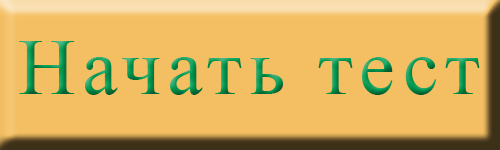

Тест "Определение типа будущей профессии"
В основу данного теста положена идея о делении всех существующих профессий на 5 типов по признаку предмета или объекта, с которым взаимодействует человек в процессе труда.
Человек – природа. Объектом труда являются живые организмы, растения, животные и биологические процессы.
Человек – техника. Это группа профессий, в основе которых лежат отношения. Объектом труда служат технические системы, машины, аппараты и установки, материалы и энергия.
Человек – человек. Объект труда в данной группе профессий - люди, группы, коллективы.
Человек – знаковая система. Объектами являются условные знаки, шифры, коды, таблицы.
Человек – художественный образ. Объектом труда здесь служат художественные образы, их роли, элементы и особенности.
Ответив на все вопросы, Вы сможете узнать, какой тип профессий Вам лучше выбрать для достижения успеха в будущей карьере.

Какая профессия мне подходит?
Очень часто выбор профессии оказывается случайным и непродуманным, потому как далеко не каждый может уверенно ответить на вопрос, кем он хочет стать и чему он готов посвятить свою жизнь.
А когда ошибка становится очевидной, человек снова сталкивается с проблемой выбора – продолжать мучения, пополнить ряды безработных или снова получать образование, но в другой сфере?
Чтобы не совершить ошибку в самом начале пути, предлагаем вам ответить на несколько вопросов нашего теста и узнать, какая профессия вам подходит больше всего.